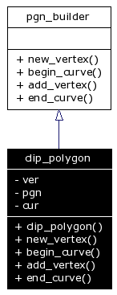

Main Page
|
Class Hierarchy
|
Alphabetical List
|
Class List
|
File List
|
Class Members
clip_polygon Class Reference
Inheritance diagram for clip_polygon:
[
legend
]
Collaboration diagram for clip_polygon:

[
legend
]
List of all members.
Public Member Functions
clip_polygon
(vertex_type &v, edge_type &e)
int
new_vertex
(double x, double y)
void
begin_curve
()
void
add_vertex
(int)
void
end_curve
()
Detailed Description
Definition at line
240
of file
ps_data.h
.
The documentation for this class was generated from the following files:
ps_data.h
ps_clip.cpp
Generated on Чт 31. май 22:09:18 2007 by
1.4.3

 1.4.3
1.4.3